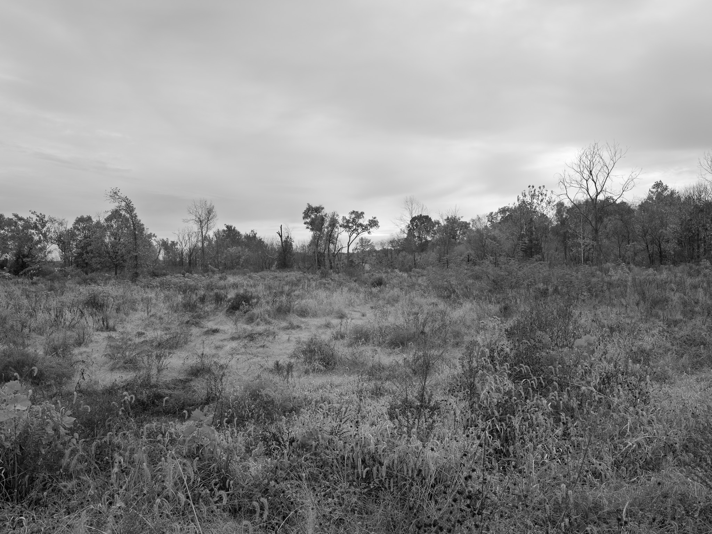
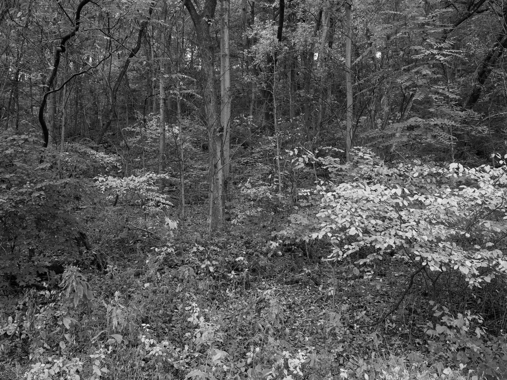
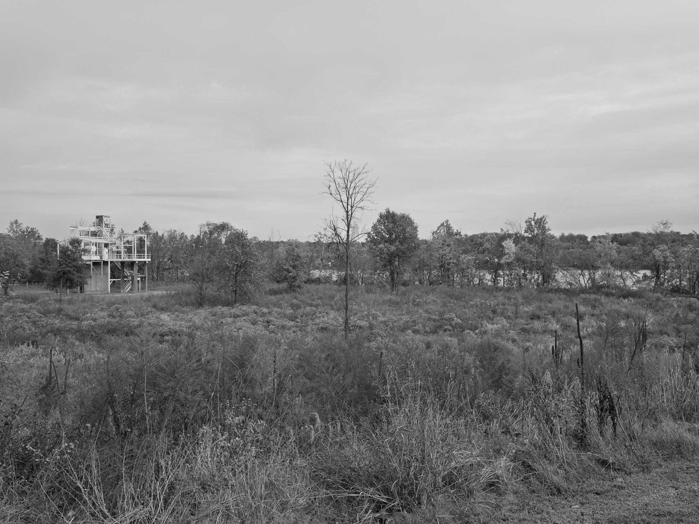
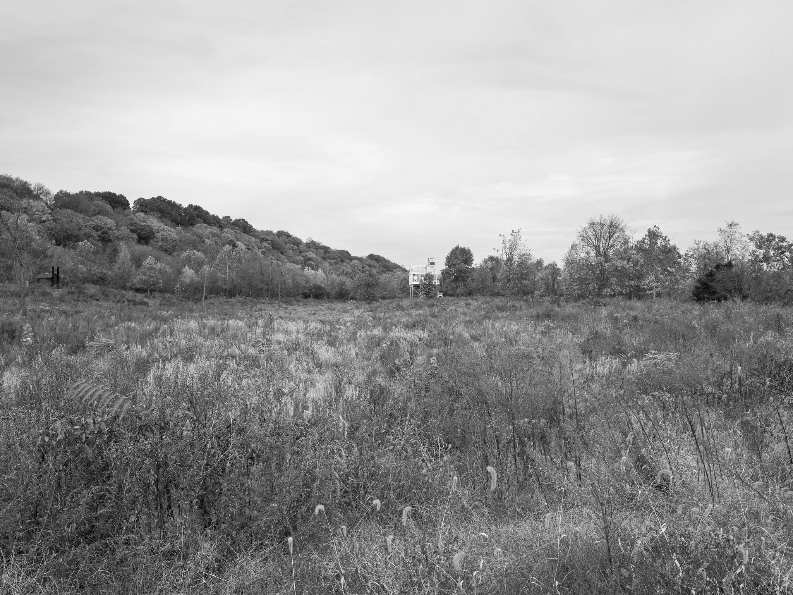
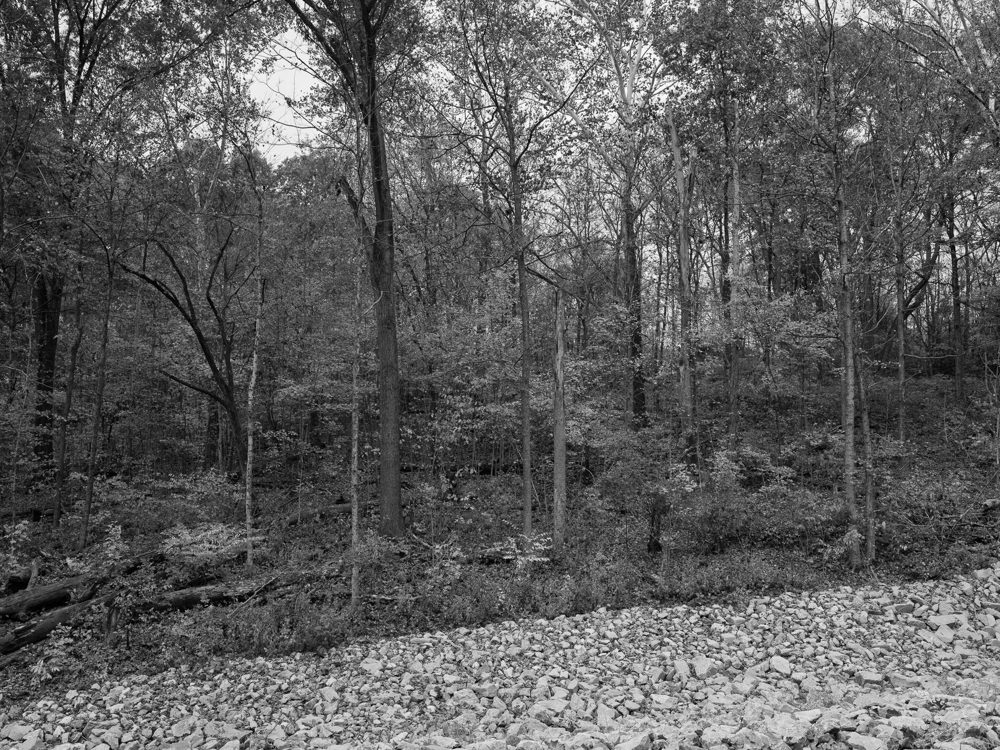

Public Lands Institute
Map
Images
Archive
About
Contribute
Charlestown State Park
IN

Charlestown State Park 1 · 2026-11-01
_DSF4775.jpg

Charlestown State Park 2 · 2026-11-01
_DSF4783.jpg

Charlestown State Park 3 · 2026-11-01
_DSF4786.jpg

Charlestown State Park 4 · 2026-11-01
_DSF4789.jpg

Charlestown State Park 5 · 2026-11-01
_DSF4790.jpg
View all 5 images →
← Serpent Mound
Hemlock Cliffs →